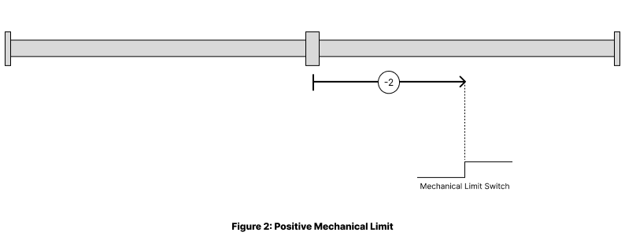
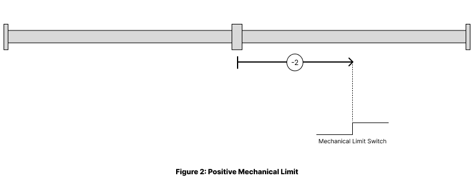

Operation Modes
Overview
The Q-Drives C7 controller supports multiple CANopen operation modes designed for different motion control applications. Each mode provides specific functionality tailored to particular use cases, from simple velocity control to complex multi-axis coordination.
Mode Selection
Configuration Objects:
- Modes of operation (6060h): Set the desired operation mode
- Modes of operation display (6061h): Shows the current active mode
- Supported homing methods (60e3h): Indicates which homing methods are available
- Supported drive modes (6502h): Indicates which modes are available
Important Notes: - Mode changes typically require the device to be in Pre-operational state - Not all modes may be supported on every device variant - Check object 6502h to verify available modes before attempting to switch
Profile Position - Mode 1
Description
Point-to-point positioning with built-in trajectory generation for precise positioning applications.
Essential Objects
| Object | Index | Description |
|---|---|---|
| Position Trajectory | 2042h | Parameters for position trajectory |
| Position Select Table | 2045h | Predefined position values for selection |
| Position target value | 607Ah | Commanded position (absolute/relative) |
| Position demand value | 6062h | Demanded position value |
| Position actual value | 6064h | Demanded position value |
| Software position limit | 607Dh | Min/max position limits |
| Max profile velocity | 607fh | Maximum velocity limit |
| Profile velocity | 6081h | Maximum velocity during motion |
| Profile acceleration | 6083h | Acceleration rate |
| Profile deceleration | 6084h | Deceleration rate |
| Profile type | 6086h | Type of trajectory (0=linear, 1=sin², etc.) |
| Position encoder resolution | 608fh | Configuration of position encoder resolution |
| Gear ratio | 6091h | Configuration of gear ratio |
| Feed constant | 6092h | Configuration of feed constant |
Control Sequence
- Set target position (607Ah)
- Configure velocity and acceleration parameters
- Set controlword bit 4 (new set-point) to start motion
- Monitor statusword bit 10 (target reached) for completion
Velocity Mode - Mode 2
Description
Simple velocity control with ramp functions, designed for frequency inverter-style applications.
Essential Objects
| Object | Index | Description |
|---|---|---|
| Speed Trajectory | 2041h | Parameters for speed trajectory |
| Speed Select Table | 2044h | Predefined speed values for selection |
| vl target velocity | 6042h | Desired velocity setpoint |
| vl velocity demand | 6043h | Demanded velocity endpoint |
| vl velocity actual value | 6044h | Current velocity feedback |
| vl velocity min max amount | 6046h | Velocity limits |
| vl velocity acceleration | 6048h | Acceleration ramp settings |
| vl velocity deceleration | 6049h | Deceleration ramp settings |
| Max motor speed | 6080h | Maximum rotational speed |
| velocity encoder resolution | 6090h | Configuration of velocity encoder resolution |
| Gear ratio | 6091h | Configuration of gear ratio |
| Feed constant | 6092h | Configuration of feed constant |
| Velocity Factor | 6096h | User-defined Velocity units |
| Acceleration factor | 6097h | Defines scaling factors for acceleration |
Control Bits
- Bit 4: Enable ramp (0=other control, 1=ramp follows input)
- Bit 5: Unlock ramp (0=locked, 1=follow reference)
- Bit 6: Reference ramp (0=zero input, 1=follow reference)
- Bit 8: Halt (0=no command, 1=stop motor)
Homing Mode - Mode 6
Description
Establish absolute position reference using various homing methods.
Use Cases
- Finding machine zero position
- Establishing absolute coordinate system
- Initial positioning after power-up
Common Homing Methods
| Method | Description |
|---|---|
| -1/-2 | Negativ/Positiv Mechanical Limit |
| 17/18 | Negativ/Positiv Limit Switch |
| 19/20 | Positiv Home Switch |
| 21/22 | Negativ Home Switch |
| 37 | Homing Current Position |
Method: Negativ/Positiv Mechanical Limit
 Figure 1
Using this method as shown in Figure 1, the initial direction of movement shall be leftward if
the negative limit switch is inactive (here: low). The home position shall be at the first homing pulse to the right of the position where the negative limit switch becomes inactive.

Figure 2
Using this method as shown in Figure 2, the initial direction of movement shall be rightward if
the positive limit switch is inactive (here: low). The position of home shall be at the first homing pulse to the left of the position where the positive limit switch becomes inactive.
Figure 1
Using this method as shown in Figure 1, the initial direction of movement shall be leftward if
the negative limit switch is inactive (here: low). The home position shall be at the first homing pulse to the right of the position where the negative limit switch becomes inactive.

Figure 2
Using this method as shown in Figure 2, the initial direction of movement shall be rightward if
the positive limit switch is inactive (here: low). The position of home shall be at the first homing pulse to the left of the position where the positive limit switch becomes inactive.
Method: Negativ/Positiv Limit Limit
Figure 3
Using this method as shown in Figure 3, the initial direction of movement shall be leftward if
the negative limit switch is inactive (here: low). The home position shall be at the first homing pulse to the right of the position where the negative limit switch becomes inactive.
Figure 4
Using this method as shown in Figure 4, the initial direction of movement shall be rightward if
the positive limit switch is inactive (here: low). The position of home shall be at the first homing pulse to the left of the position where the positive limit switch becomes inactive.
Method: Homing Current Position
Using this method, the position of home shall be at the initial position.
Essential Objects
| Object | Index | Description |
|---|---|---|
| Homing | 2033h | Configuration for homing procedure |
| Home offset | 607Ch | Offset from home position |
| Homing method | 6098h | Selected homing method |
| Gear ratio | 6091h | Configuration of gear ratio |
| Feed constant | 6092h | Configuration of feed constant |
| Homing speeds | 6099h | Search and zero speeds |
| Homing acceleration | 609Ah | Acceleration during homing |
| Supported homing methods | 60e3h | Available Homing Methods |
Control Sequence
- Set homing method (6098h)
- Configure speeds and acceleration
- Set controlword bit 4 to start homing
- Monitor statusword bits 10, 12, 13 for completion/status
Technical Support
For additional support beyond this documentation:
- Website: www.q-drives.com
- Contact: technik@q-drives.com
Version History
| Version | Date | Changes | Firmware Version |
|---|---|---|---|
| 0.1 | 15.11.2024 | Initial release | 2.01.6 |
| 1.1 | 11.08.2025 | Add Operation Modes | 2.01.6 |
| 1.2 | 11.09.2025 | Update Object Dictionary | 2.2.1 Build 108-25 |
| 1.3 | 11.09.2025 | Update operation modes | 2.2.1 Build 108-25 |
Document Information:
- Firmware Compatibility: 2.01.6 and later
- Standards: CiA 301, CiA 402 compliant